Join Robert Hess, as he meets with the developers, program managers, and others who are integral in the process of explaining Microsoft technologies to others. These episodes will primarily be lead-ups to the presentations at our MIX and PDC events, providing people with insights and details as to what some of these sessions will cover.
Into the Cloud with Windows Azure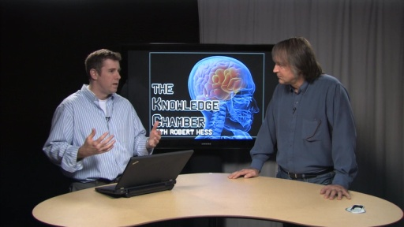[WMV] [0:17:36] [2012/06/06]Window Azure provides a quick, easy, and—more importantly—powerful way for companies of any size to take advantage of cloud based services. While lots of companies are already moving their…
Application Compatibility: The Inside Scoop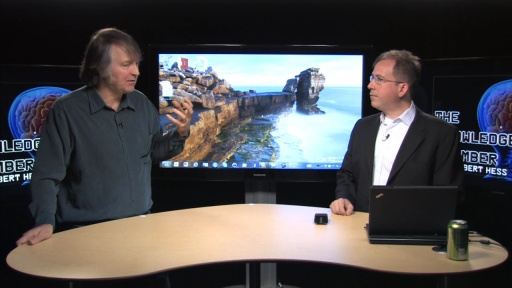[WMV] [0:36:13] [2012/04/19]With every new version of Windows, there is a huge effort to make sure that applications that worked on the previous version continue to work as expected. For this episode, I've invited Chris Jackson…
C++: A Language for Modern Times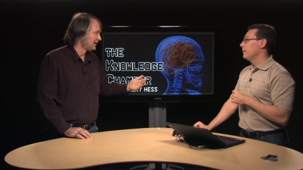[WMV] [0:29:10] [2012/03/30]C++ has been around for what seems like forever. It might seem like it's taken a back seat to languages that provide better application isolation and better development throughput, but in…
An Introduction to Windows Azure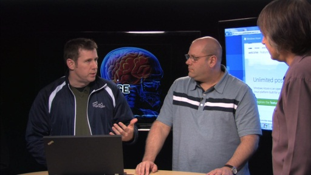[WMV] [0:16:52] [2012/03/16]Windows Azure provides scalable data and processing resources for businesses of almost any size. Steve Fox and Paul Stubbs are going to be presenting a PreCon seminar at TechEd ("Windows Azure…
User-Centric Application Delivery Rocks the World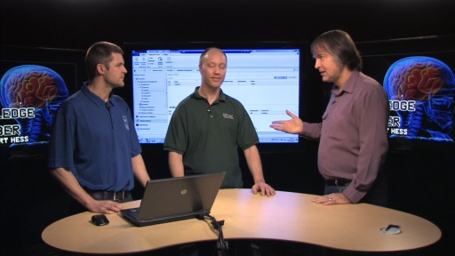[WMV] [0:16:12] [2012/03/09]Microsoft System Center Configuration Manager 2012 adds several new and exciting features which will radically change how software can be deployed to users in businesses of various sizes. Johan…
Sean McKenna and Windows Phone "Mango" Database Support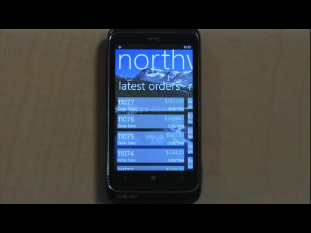[WMV] [0:19:34] [2011/08/23] Windows Phone "Mango" includes a lot of cool, exciting new features that users will be showing to all of their friends. Of course, there are some features so behind the scenes that users…
Thomas Fennel and Windows Phone Mango's Push Notifications and Live Tile Support[WMV] [0:14:30] [2011/08/12] The Windows Phone interface has been designed to make it as easy as possible for users to get to the information they need in the applications they use. In the upcoming release of Windows Phone,…
Peter Torr and Application Multi-Tasking on Windows Phone "Mango"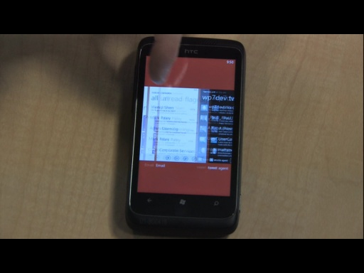[WMV] [0:21:20] [2011/08/05] "Mango" is the code name for the upcoming release of the Windows Phone application platform. As you've no doubt read in countless other locations, there are lots of new features and…
Clint Rutkas and "Where's My Car" on Windows Phone 7[WMV] [0:20:15] [2011/05/17] Windows Phone has proven to be a popular platform for developing a wide variety of applications. Clint Rutkas joins us on this episode to explain what "Coding4Fun" is, and how they help…
Andrew Clinick WP7 Application Pick: TuneIn Radio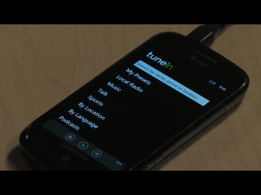[WMV] [0:10:56] [2011/04/01] Andrew Clinick, Lead Program Manager for Windows Phone Developer Platform joins us today to discuss some of the features and capabilities that get him excited about helping developers build great…
Using XNA for Developing Windows Phone Games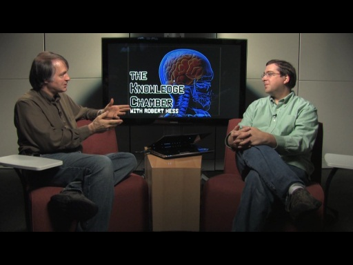[WMV] [0:22:39] [2010/11/19] When talking about developing applications for the new Windows Phone platform, we usually focus on Silverlight. There is, however, another programming model for developing Windows Phone applications,…
PDC10 and the new Online Experience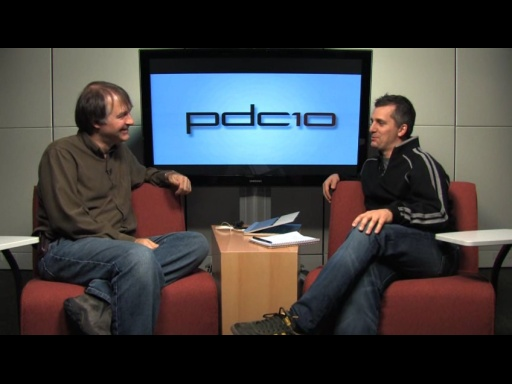[WMV] [0:19:58] [2010/10/06] PDC10 is fast approaching, and if you’ve been paying attention, you know that things are different this year. While you might know that for the first time we will be holding it at our own conference…
Windows Identity Foundation with Vittorio Bertocci[WMV] [0:38:22] [2010/08/31]One of the thorns in the sides of all Internet users is the plethora of accounts they need to keep track of for the various websites they use throughout the day. Most of the folks running these sites…
Windows Phone 7 Development with Mike Harsh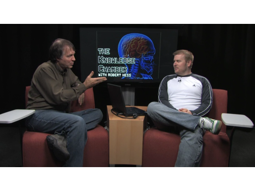[WMV] [0:20:53] [2010/08/03]With just a short time to go before Windows Phone 7 hits the market, there is no time like the present to start developing your applications. Mike Harsh recently presented a session at MIX10 on…
Intro to "Small Basic" with Vijaye Raji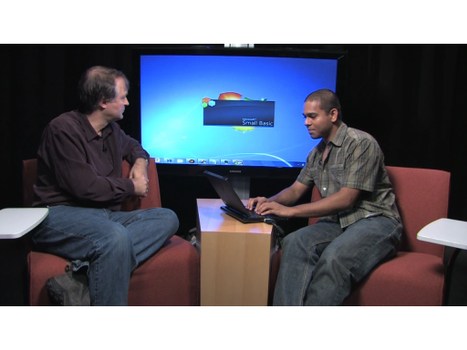[WMV] [0:15:22] [2010/07/06]
There once was a time when computers would boot up straight into a (very rudimentary) programming environment. You learned to write code because, well, that’s what computers were used for. BASIC was…
Visual Studio 2010 Code Visualization Tools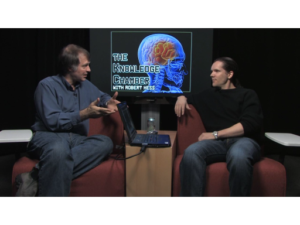[WMV] [0:12:30] [2010/04/15]
Visual Studio 2010 is a fairly important release of the developer tool of choice for writing Windows applications. One of the important advancements in the new update is how it enables developers…
Microsoft Research: Tools to Help Resolve Concurrency Problems[WMV] [0:16:56] [2010/03/06]If you are developing multi-threaded applications, there is a possibility that you may be having concurrency problems, and these problems can be difficult to reproduce and identify.At PDC09, Madan…
Multi-Core and Parallel Programming Practices[WMV] [0:19:48] [2010/02/03]
In case you haven’t realized it, the new trend in computer chip technology is multi-core. This is where most of the speed improvements moving forward will come from on our computers. To take full…
Integrating Microsoft Silverlight with Microsoft Sharepoint 2010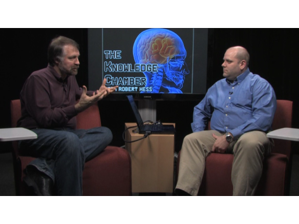[WMV] [0:21:21] [2010/01/26]
The upcoming release of Sharepoint 2010 will provide features and capabilities which will allow it to directly support Silverlight development and controls. At PDC09, Paul Stubbs held a session…
PDC09: John Durant on newly announced SharePoint features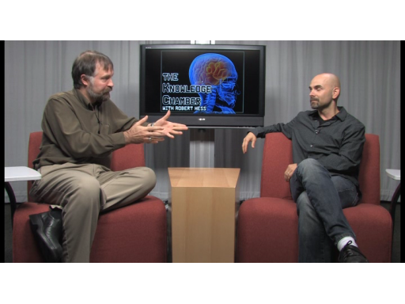[WMV] [0:17:48] [2009/11/19]
John Durant just returned from the Microsoft SharePoint Conference where a number of new SharePoint features were announced. In this episode he shares some of those
features with us and describes…
PDC09 Workshop: Developing Quality Software Using Microsoft Visual Studio Team System 2010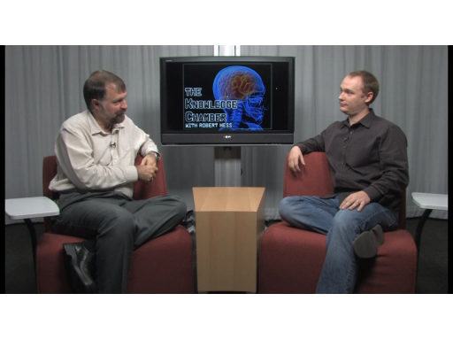[WMV] [0:16:38] [2009/11/04]
Visual Studio 2010 recently released a new beta of Visual Studio 2010, which includes a variety of improvements for a broad spectrum of developer needs. For PDC09, Chris
Tullier and Todd Girvin…
Developing Windows Azure applications for PHP, Ruby, and Java, using Eclipse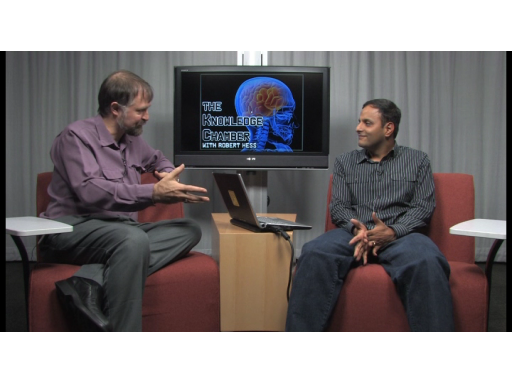[WMV] [0:26:17] [2009/10/28]
In our
previous episode, Vijay Rajagopalan shared with us some of the details about a session he did at MIX09 which showed how Microsoft was providing support for
building Silverlight…
Using Eclipse to build Silverlight applications in Java, PHP and Ruby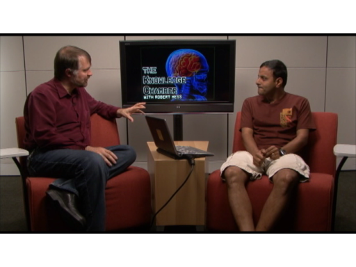[WMV] [0:07:46] [2009/10/23]
As hard as it might be to believe, not everybody is using Visual Studio as their development platform. Then what if they want to develop a Silverlight application? Is notepad their only…
PDC09: Application Deployment with Microsoft SQL Server 2008 R2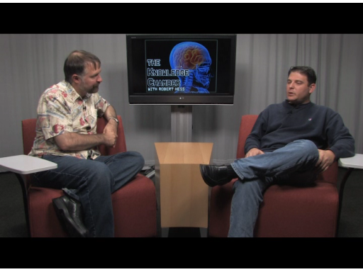[WMV] [0:09:22] [2009/10/22]As part of our lead-up to PDC09, I am joined today by Omri Bahat who is going to share with us some of the aspects of SQL Server 2008 R2 which will provide a more efficient way to develop, deploy, and…
PDC09 Workshop: Microsoft Technology Roadmap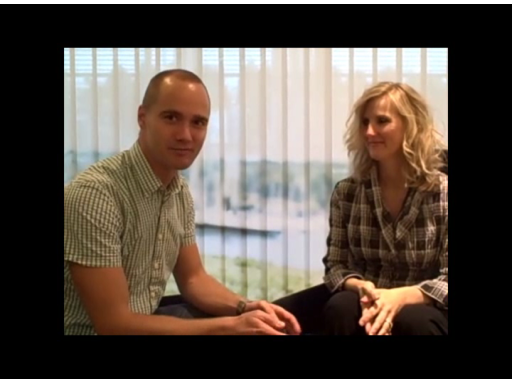[WMV] [0:11:41] [2009/10/15]
For one of the day-long workshops at this years PDC, Michele Leroux Bustamante will be hosting a session where she'll walk attendees through
a variety of Microsoft technologies and help them…
PDC09 Workshop: Getting the Most out of Microsoft Silverlight 3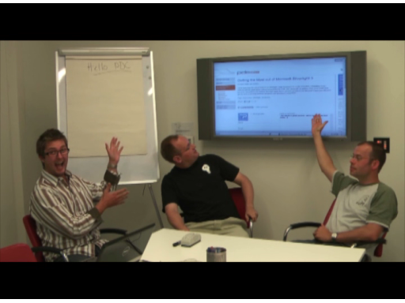[WMV] [0:12:32] [2009/09/29]
It can be easy to get caught up in all of the fancy graphics, transitions, and video effects that are part of Silverlight, but that doesn’t mean you can’t write serious, business ready, applications…
Juval Lowy The EnergyNet and the next Killer App[WMV] [0:09:23] [2009/09/24]
Many people love to speculate on what the next Killer App might be. Juval Lowy will use his ideal killer app as the basis of his upcoming workshop at PDC09
on November 16th. He’d like to think…
PDC09 Workshop: Developing Microsoft BI Applications - The How and The Why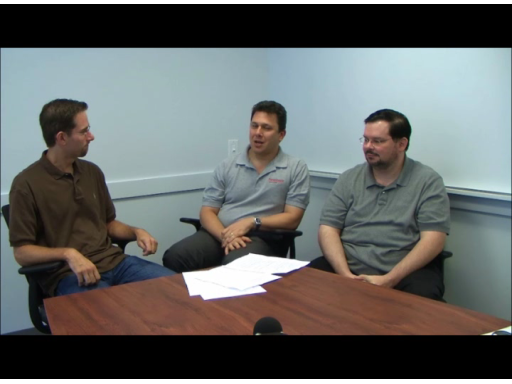[WMV] [0:09:48] [2009/09/19]BI, or "Business Intelligence" allows businesses to make better use of their data, and resources in order to make better decisions related to how to grow and improve their business. For the…
John Durant Developing Managed Applications for Office 2010 in Visual Studio 2010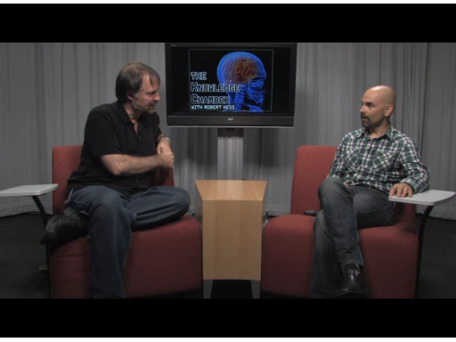[WMV] [0:21:55] [2009/09/17]
One of the recent sessions announced for PDC09 is one which will focus on some key advancements in Office 2010 as well as Visual Studio 2010, which will allow developers to take better advantage of…
Ade Miller and Patterns of Parallel Programming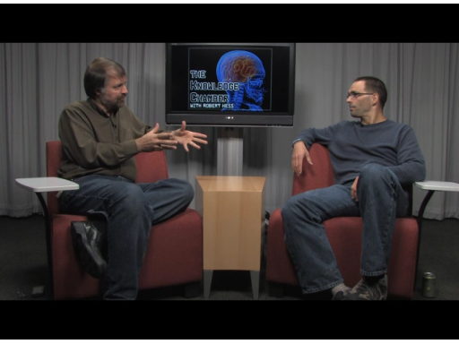[WMV] [0:16:11] [2009/09/10]While technically the PDC this year starts on November 17th, the day before that we will be hosting a set of day-long intensive workshops on several specific topics.
One of these workshops will…
Chris Auld - PDC09 Architecting and Developing for Windows Azure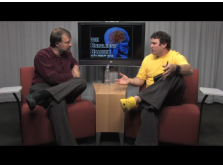[WMV] [0:13:00] [2009/08/20]At the PDC, we typically have some additional "pre conference" workshops which provide very indepth and hands on access to a few select technologies. Chris Auld, Director of Strategy for…
Gestalt - Nishant Kothary and Joshua Allen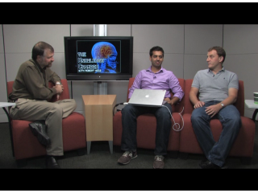[WMV] [0:23:54] [2009/07/22]
Not all Microsoft technologies and projects come out of large development teams with huge budgets and equally huge objectives. There are in fact a variety of very useful technologies which are…
Yavor Georgiev - Using WCF with Silverlight 3.0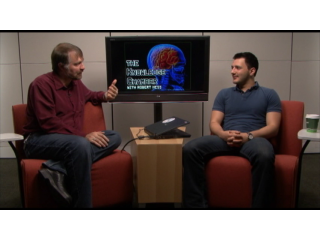[WMV] [0:20:25] [2009/07/08]
WCF (Windows Communication Foundation), provides a clean way to develop connected, service-oriented applications using the .NET Framework. Yavor Georgiev joins us in this episode to show us more…
Yochay Kiriaty - Windows 7 Developer Training Kit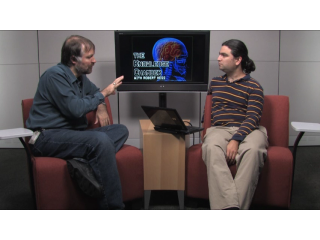[WMV] [0:23:07] [2009/06/29]Windows 7 introduces some new UI enhancements, as well as a few additional features that developers should be looking at incorporating into their applications. Yochay Kiriaty joins us to talk about he…
Phil Haack - ASP.NET, MVC, and Ninjas On Fire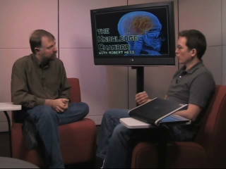[WMV] [0:09:09] [2009/06/10]Phil Haack had a session at MIX09 who's name caught my eye: "ASP.NET MVC Ninjas on Fire Black Belt Tips", which I suppose was part of the intent.
I asked Phil to drop by and share with us…
Scott Hanselman - NerdDinner.com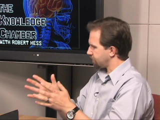[WMV] [0:20:24] [2009/06/05]Scott Hanselman did an interesting session at MIX09 called "File|New -> Company", where he essentially started with a blank screen, and using Visual Studio, ASP.NET, Ajax, and Model View…
Chris Pendleton - Virtual Earth Silverlight Map Control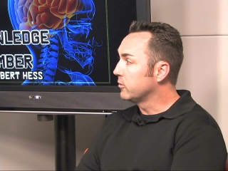[WMV] [0:15:56] [2009/05/28]Virtual Earth continues to evolve and support a very robust programming model which allows developers to create unique and interesting mapping applications. One of the most recent developments is that…
Mark Wilson-Thomas: WPF and Silverlight Development in Visual Studio 2010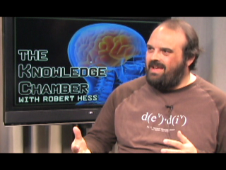[WMV] [0:20:20] [2009/05/07]Recently, Mark Wilson-Thomas did some sessions at MIX09 in which he provided details and demos of how Visual Studio 2010 will provide better support for rich development of WPF and Silverlight…
Tim Aidlin - Glimmer, a JQuery Interactive Design Tool[WMV] [0:17:02] [2009/04/29]We welcome back Tim Aidlin to the show so he can share with us some details and information on a tool he and Karsten Januszewski have been working on. It provides an interactive way for designers (and…
Keiji Kanazawa - Windows Live Messenger Web Toolkit[WMV] [0:13:08] [2009/04/04]
Social Networking remains one of the key features that helps to not only drive a sense of "community" amongst web users, but also helps to drive visits to sites. In this episode, I meet…
Mike Swanson - XAML Plugin for Adobe Illustrator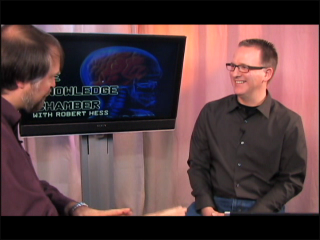[WMV] [0:16:39] [2009/03/27]Both of us freshly back from MIX09, Mike Swanson stops in to show us a plug in that he wrote which allows users of Adobe Illustrator to export their designs as XAML for either WPF or…
Stephen Walther - New Features of ASP.NET 4.0[WMV] [0:07:10] [2009/03/14]
Stephen Walther is preparing two great talks for MIX09 which illustrate some of the new features of ASP.NET 4.0. We were able to spend a little time with him and discussed a couple of the things…
Brad Abrams - Silverlight 3.0 for Great Business Apps[WMV] [0:15:32] [2009/03/10]
Even business applications deserve to look nice. In this episode Brad Abrams shares with us some of the details he will be covering in his upcoming MIX09 session on Silverlight 3.0. While there are…
Joe Fletcher Touch and Gesture Computing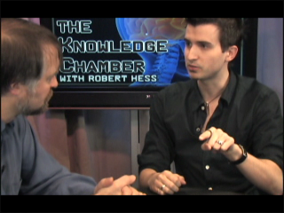[WMV] [0:16:40] [2009/03/02]
Joe Fletcher works in the Surface team, and is focused on identifying design approaches which best utilize touch-based interfaces for both Surface as well as Windows 7. In this episode we will…
Johnny Lee: Microsoft Researcher[WMV] [0:15:37] [2009/02/25]
Johnny Lee works in Microsoft Research, with a specific penchant at creating interesting and useful devices. He has a session scheduled for MIX09 called "Interaction Techniques Using the Wii…
Tim Aidlin - User Experience Designer[WMV] [0:11:35] [2009/02/17]Tim Aidlin, is a User Experience (aka "UX") Designer at Microsoft and is responsible for many of the graphics work being done for MIX09. Since MIX has a strong focus of addressing the needs…
Joanna Mason - Senior Program Manager, Expression Blend[WMV] [0:09:49] [2009/02/10]Joanna Mason, a Senior Program Manager for Expression Blend, is working on several sessions for MIX09 for illustrating best practices of how to keep the designer involved throughout the entire…
Steve Guttman - Microsoft Expression Web: No Platform Left Behind[WMV] [0:09:12] [2009/01/28]
Steve Guttman, Product Unit Manager for Expression Web, is hard at work on a session to be presented at MIX09 which will illustrate how Expression Web can be used to build resilient standards-based…